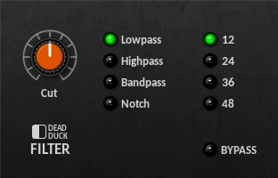
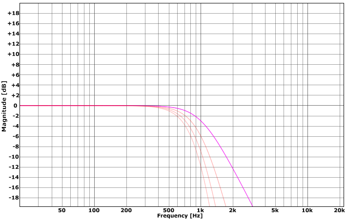
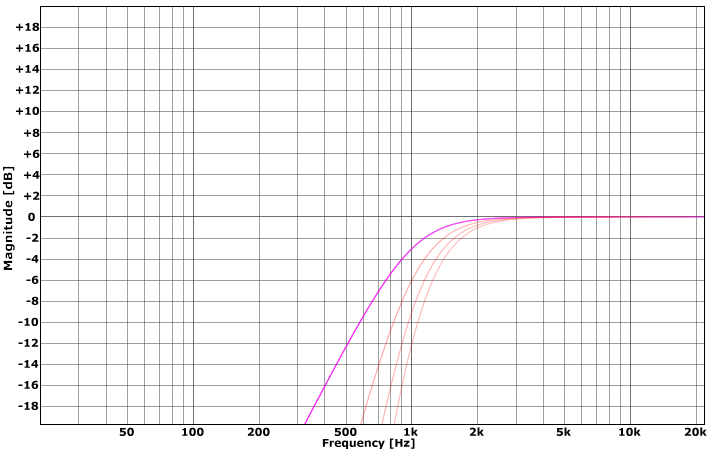
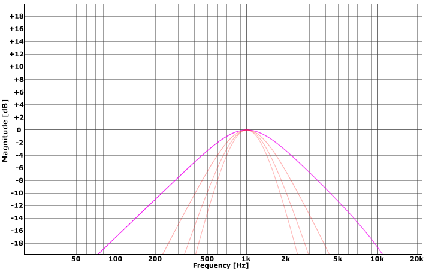
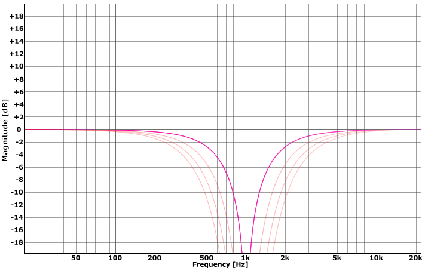
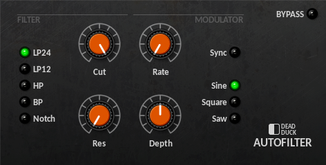
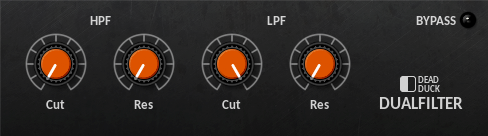
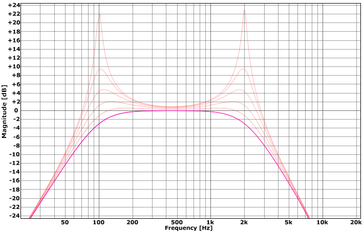

Filters¶
Filter¶
A multi-mode filter with low-pass, high-pass, band-pass and band-stop (notch) responses from 12 to 48 dB/octave.
The following controls are provided:
Cut - set the cutoff frequency from 10 Hz to 20 kHz.
Filter Selector - set the filter type to lowpass, highpass, bandpass or notch.
Slope Selector - set the steepness of the frequency response to 12, 24, 36 or 48 dB/octave.
The lowpass filter shows the following frequency responses at 1 kHz:
The highpass filter shows the following frequency responses at 1 kHz:
The bandpass filter shows the following frequency responses at 1 kHz:
The notch filter shows the following frequency responses at 1 kHz:
In each case the darker line represents 12 dB/octave and the remaining lines 24, 36 and 48 dB/octave respectively.
AutoFilter¶
A resonant multi-mode filter with a built-in LFO modulator.
The AutoFilter is divided into two sections: a filter and a modulator.
The filter section provides the following controls:
Filter Selector - set the type of the filter to LP24, LP12, HP, BP or BS.
Cut - set the cutoff frequency from 20 Hz to 20 kHz.
Res - set the resonance level from 0 to 100%.
The filter types available are:
LP24 - lowpass (24 dB/octave)
LP12 - lowpass (12 dB/octave)
HP - highpass (12 dB/octave)
BP - bandpass (12 dB/octave)
Notch - bandstop (12 dB/octave)
The modulation section provides the following controls:
Modulation Selector - set the modulation type to sine, sawtooth or square waveforms.
Sync - switch between frequency and tempo-based timing.
Rate - set the modulation rate from 0.01 Hz to 20 Hz or 8/1 to 1/32T according to the sync setting.
Depth - set the amount of modulation applied from -100% to +100%. Negative amounts use an inverted waveform affecting the phase and, for the sawtooth wave, the shape of the modulation applied.
DualFilter¶
A highpass and lowpass filter combination with full-range cutoff frequencies and resonance.
Both the filters provide the same controls:
Cut - set the cutoff frequency from 10 Hz to 20 kHz.
Res - set the resonance level from 0 to 100%.
With the highpass filter cut at 100 Hz and the lowpass filter at 2 kHz, the following response curves are presented for various resonance settings:
The darker line represents 0% with subsequent lines showing increments of 20% up to the maximum of 100%.